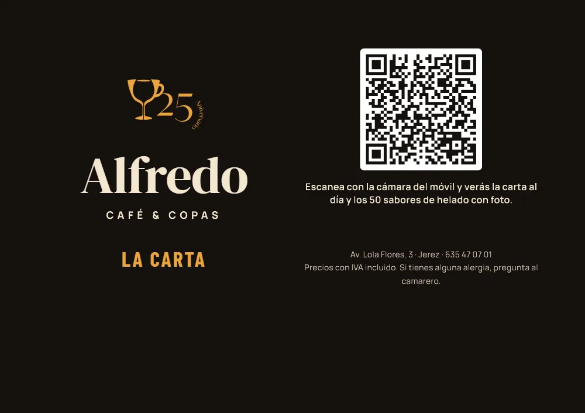
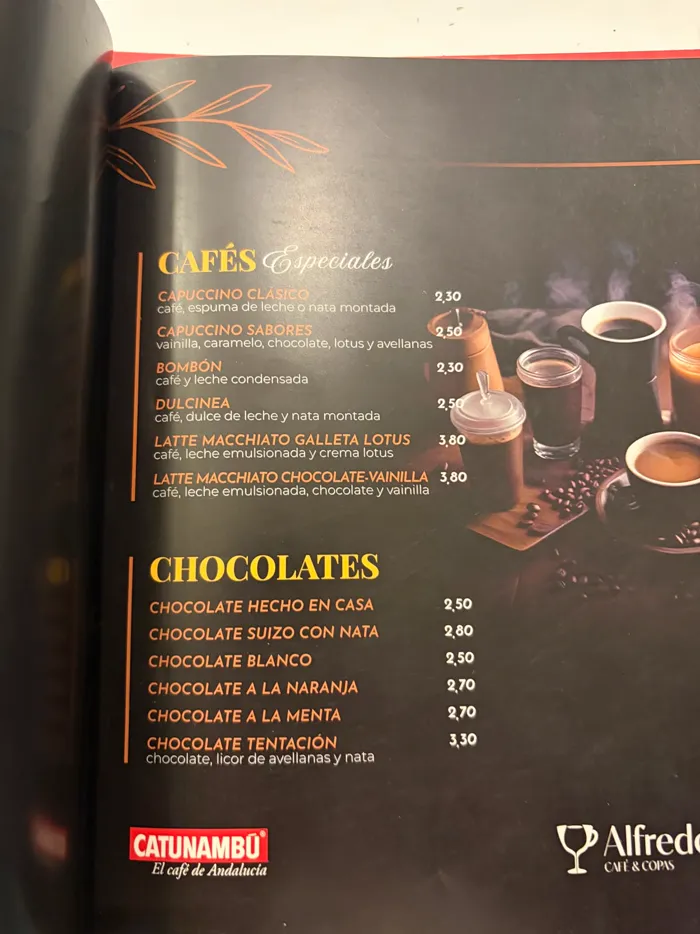
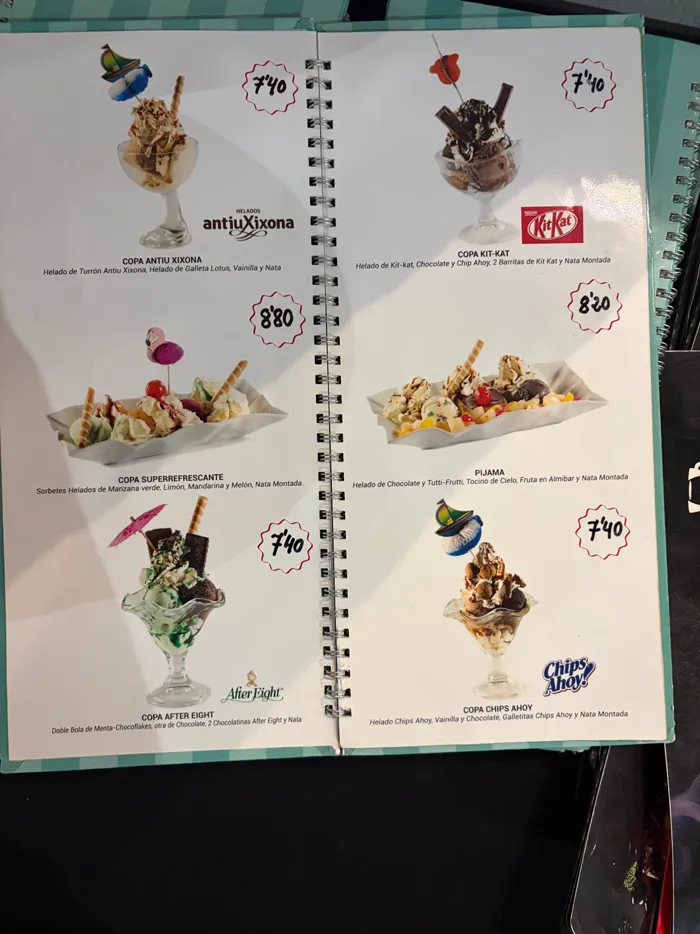
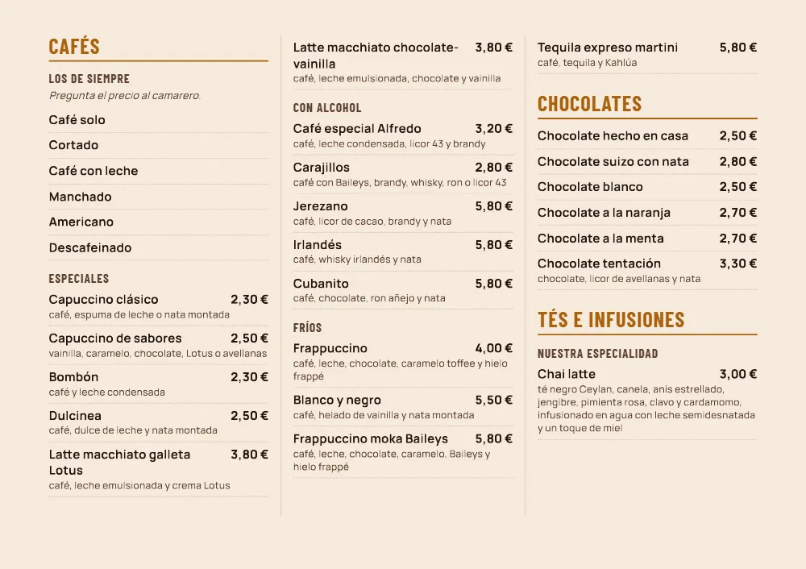
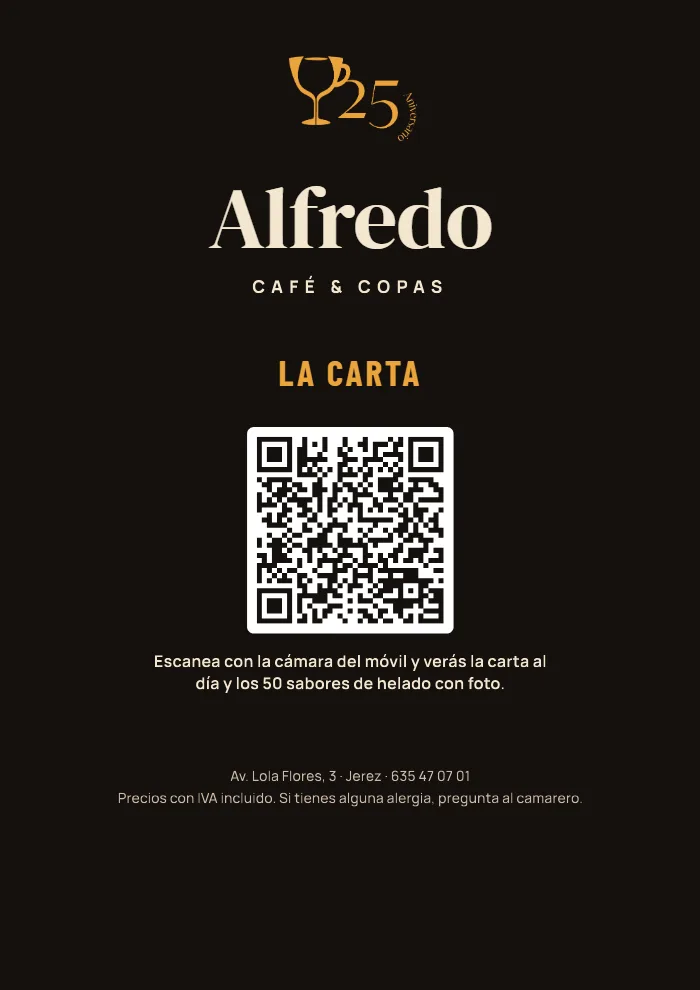
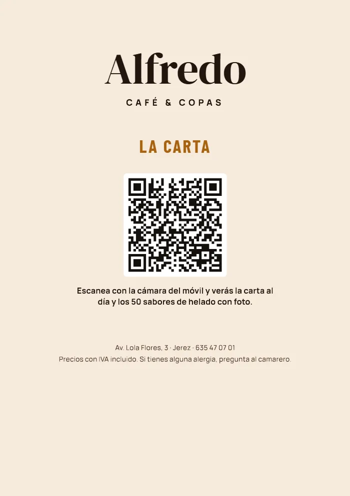
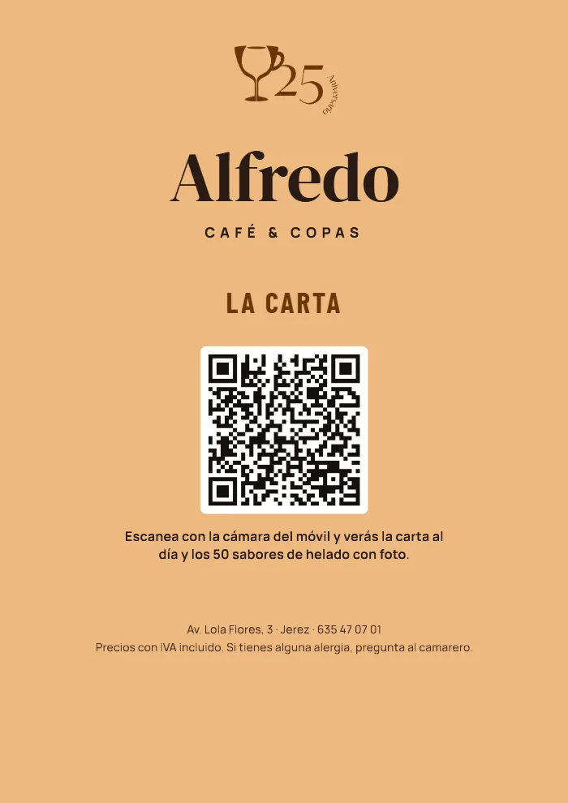
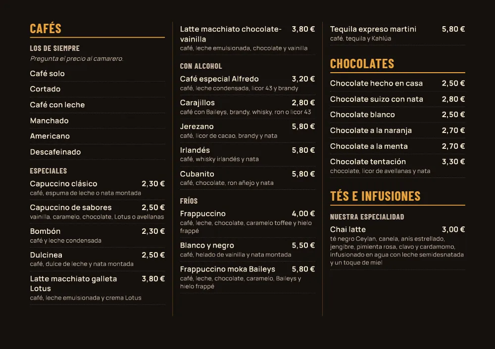
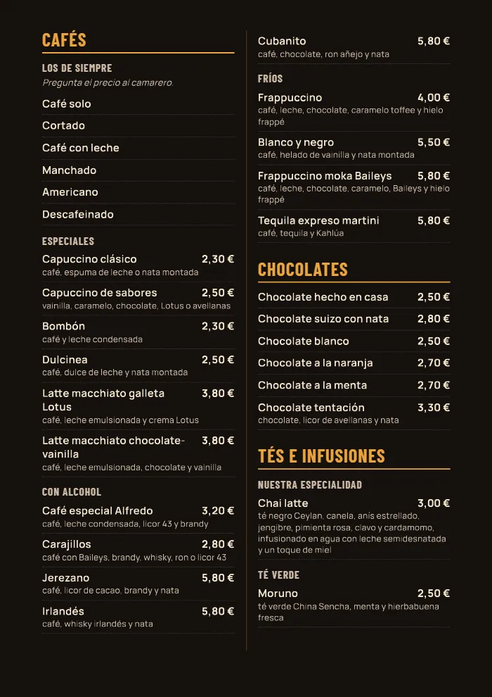

Propuesta para Alfredo Café & Copas
Una sola carta, con letra grande, el QR en la portada y en las carpetas que ya tienes.
Alejandro Corral · Hostelab · noviembre de 2026

Lo que hay ahora

La de la casaNegra con el canto rojo y fotos de producto. Horizontal, con las hojas sujetas con tornillos.

La de la heladeríaTurquesa, de Antiu Xixona, con foto de cada copa y cada sabor. De anillas y tapa dura.
Lo que propongo

Elige el color

Como la carta de ahora y la carta de la web.

La más clara y la más fácil de leer.

El color de la web del bar.
Elige el formato

A4 apaisado a tres columnas. Unas 4 hojas a doble cara. Para cambiar una hoja, se desatornilla y se pone la nueva.

A4 a dos columnas, con tapa dura. Unas 4 hojas a doble cara. Se abren las anillas y se cambia la hoja.
Las dos dejan un margen interior ancho para los tornillos o las anillas. Antes de imprimir, mido tus carpetas: tamaño de la hoja, separación de los tornillos y número de anillas.
5 / 7Cómo se hace
Los precios de impresión son orientativos: pido presupuesto a dos imprentas antes de encargar nada.
6 / 7Cuando cambie un precio
Un WhatsApp: "el gofre sube a 6,50".
En la carta de la web, y con eso queda cambiado en el móvil y en el QR.
El PDF de la hoja nueva, listo para la imprenta.
Se quita la hoja vieja de los tornillos o las anillas y se pone la nueva.
Y mientras llega la hoja nueva, el QR de la portada ya enseña el precio bueno: la carta del móvil se cambia al momento.
7 / 7